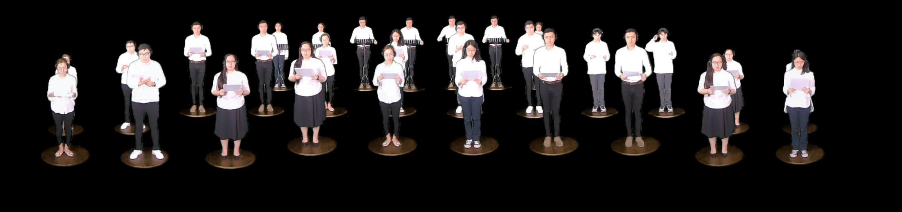

Ode to Joy VR
2018/VR/Music Ode is an immersive media experience which consists of a 47 part acapella rendition of an orchestra performing Ode to Joy. Filmed and recorded on a Sunday and a half, we composited students singing their different parts on a large panoramic video to imitate an orchestral stage. I mixed and mastered the 47 different parts to recreate this classic Beethoven piece.